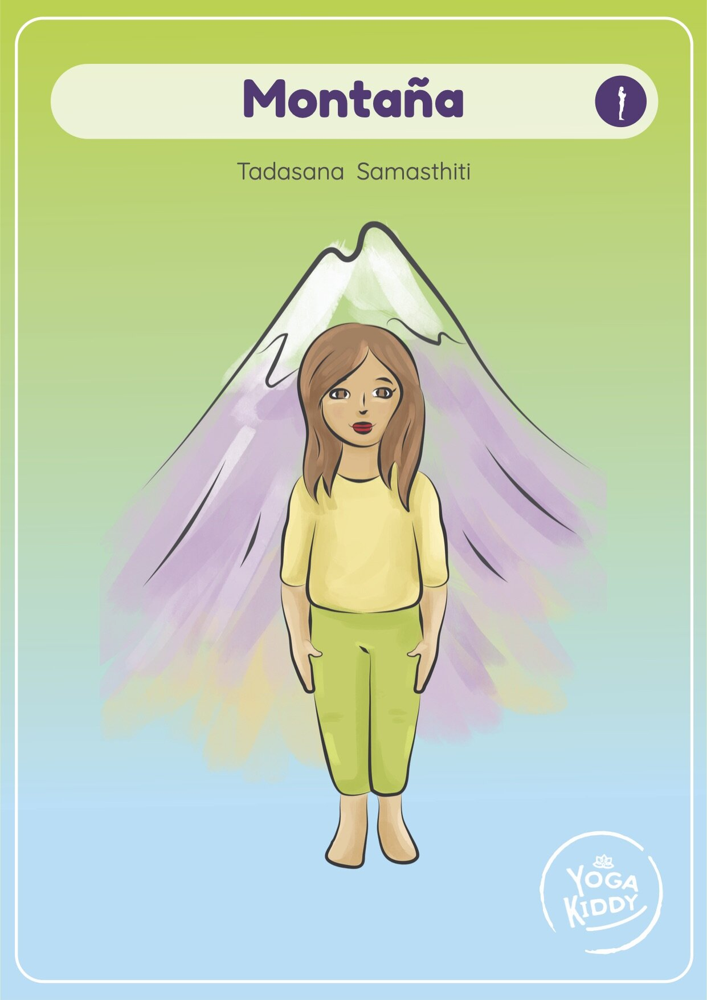

Una guía paso a paso para mejorar el equilibrio y la concentración.

Bienvenidos a nuestro blog, donde compartimos formas divertidas y creativas de hacer que los niños se muevan y aprendan a través del yoga. Hoy le mostraremos cómo hacer que la postura de la montaña sea divertida para los niños.
La postura de la montaña es una gran manera de ayudar a los niños a mejorar su equilibrio y concentración, pero puede ser un poco aburrido para ellos mantenerse quietos durante largos períodos de tiempo. Así que vamos a añadirle un poco de diversión.
Primero, empezaremos con un calentamiento divertido. Haz que los niños imaginen que son árboles cada vez más altos. Mientras alcanzan el cielo, anímales a pensar en lo fuertes y firmes que son, como una montaña.
A continuación, daremos un giro divertido a la postura tradicional de la montaña. Haz que los niños imaginen que son alpinistas y que quieren llegar a la cima de la montaña. Mientras se mantienen en equilibrio sobre un pie, pueden utilizar el otro para "trepar" por la montaña.
Para hacerlo aún más divertido, añadiremos un poco de imaginación. Haz que los niños cierren los ojos e imaginen que están escalando una hermosa montaña con picos nevados y un lago de aguas cristalinas en la cima. Anímales a respirar hondo y a sentir el aire fresco de la montaña cuando lleguen a la cima.
Por último, terminaremos con una relajación. Haga que los niños imaginen que están en la cima de la montaña, contemplando las hermosas vistas. Anímales a que se tomen un momento para apreciar la belleza que les rodea y a que se sientan orgullosos de su hazaña.
Añadiendo un poco de diversión e imaginación a la postura de yoga en la montaña, podemos ayudar a los niños a mejorar su equilibrio y concentración mientras se divierten.
Gracias por acompañarnos hoy.